About
Computer Science graduate with a B.S. and M.S. in Computer Science from the University of Puerto Rico, Río Piedras Campus. My background combines software engineering, data science, and applied research, with experience developing software applications and working with complex datasets across technical and scientific domains.
I have developed web and mobile applications using a variety of technology stacks, working across frontend and backend development, APIs, databases, and application design. My projects have included full-stack applications, mobile applications, and computational tools built with technologies such as React, React Native, TypeScript, Node.js, Python, C, and SQL.
My data science and research experience includes biostatistics, public health, machine learning, statistical analysis, and data visualization. I have worked on research involving biological and health data and developed computational tools for analyzing gene expression and gene regulatory networks using Python, C, and high-performance computing.
I enjoy working at the intersection of software engineering and data, whether building applications, analyzing complex datasets, or developing tools that turn data into practical and useful solutions.
Puerto Rico
Available for work
Skills & Tools
Languages
Python
C
C++
HTML
CSS
JavaScript
Java
C#
TypeScript
R
SQL
MongoDB
Matlab
Framework & Libraries
React
React Native
Tailwind
Flask
Dash
Numpy & Pandas
Tools & Platforms
VS Code
RStudio
Github
Other
English & Spanish
Education
Master of Science in Computer Science
Aug 2023 - Dec 2025
University of Puerto Rico, Rio Piedras Campus
Master Project: An Integrated Tool for Visualization and Analysis of Boolean Networks Representations of Gene Regulatory Networks
Graduated (GPA: 4.0)
Bachelor of Science in Computer Science
Aug 2018 - May 2023
University of Puerto Rico, Rio Piedras Campus
Graduated (GPA: 3.67)
Experience
Research/Teaching Assistant
Aug 2023 - Dec 2025
University of Puerto Rico, Rio Piedras Campus - San Juan, PR
- Developed interactive data visualization dashboards using Python and Plotly to analyze and binarize gene expression data for computational biology research.
- Enabled visualization of Boolean gene networks to improve accessibility of biological data analysis.
- Supported undergraduate CS courses by grading assignments and providing detailed technical feedback.
- Reinforced student understanding of programming, data structures, and core computer science concepts.
Biostatistics Research Intern
June 2023 - July 2023
New York University, School of Global Public Health - NYC, NY
Pathways into Quantitative Aging Research Summer Program
- Conducted biostatistical research on birth outcomes in sub-Saharan Africa using R and RStudio.
- Applied statistical methods including optimal matching and randomization inference for causal analysis.
- Analyzed large-scale epidemiological datasets as part of NIH-funded public health research.
- Contributed to insights on maternal health risks and population-level birth outcomes.
- Collaborated with researchers in quantitative aging and global health studies.
Software Engineer
Mar 2023 - June 2023
University of Puerto Rico, Rio Piedras Campus - San Juan, PR
- Spearheaded development of a full-stack web and mobile application for the non-profit organization El Puente to support climate law violation reporting in Puerto Rico.
- Built and integrated frontend and backend systems using HTML, CSS, JavaScript, Flask, and React Native.
- Developed user-friendly interfaces to enable community-driven environmental reporting and data submission.
- Collaborated on designing scalable application architecture for cross-platform functionality (web and mobile).
Biostatistics Research Intern
June 2022 - July 2022
Harvard T.H. Chan School of Public Health - Boston, MA
Summer Program in Biostatistics and Computational Biology
- Conducted research on the use of antigen home tests for population-level COVID-19 surveillance using R and statistical analysis techniques.
- Analyzed large public health datasets to evaluate screening effectiveness and support data-driven epidemiological insights.
- Completed advanced coursework in Biostatistics, Machine Learning, and Computational Biology.
- Strengthened quantitative research and data analysis skills through collaborative public health research projects.
Projects
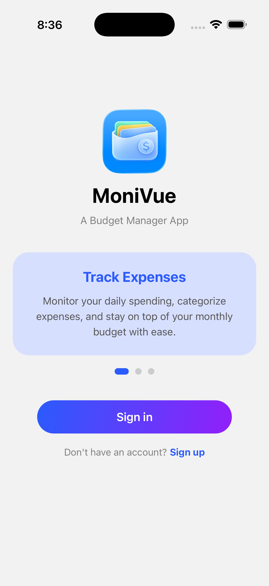
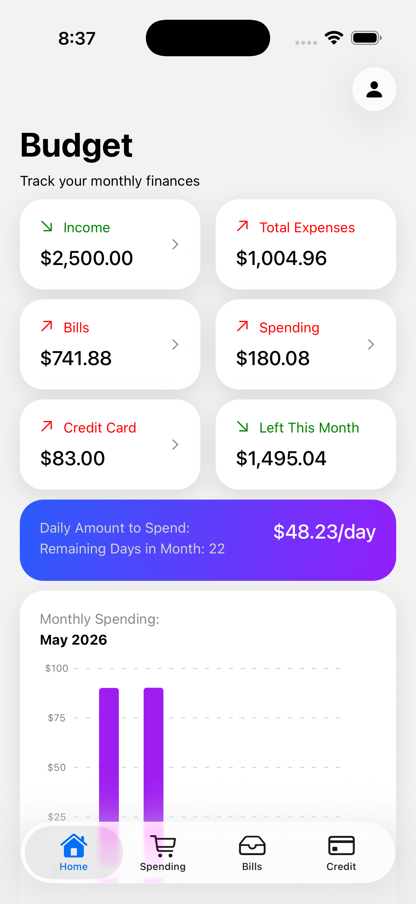
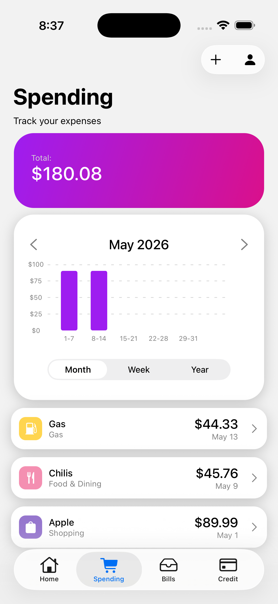
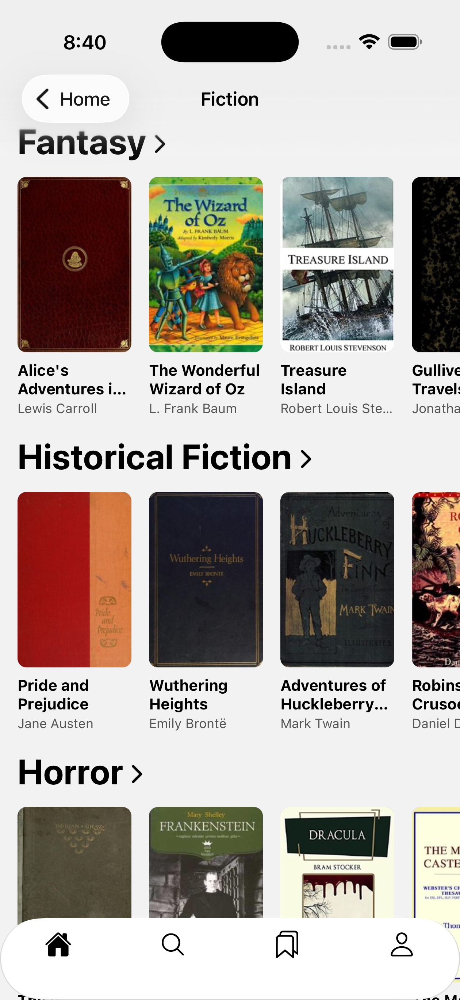
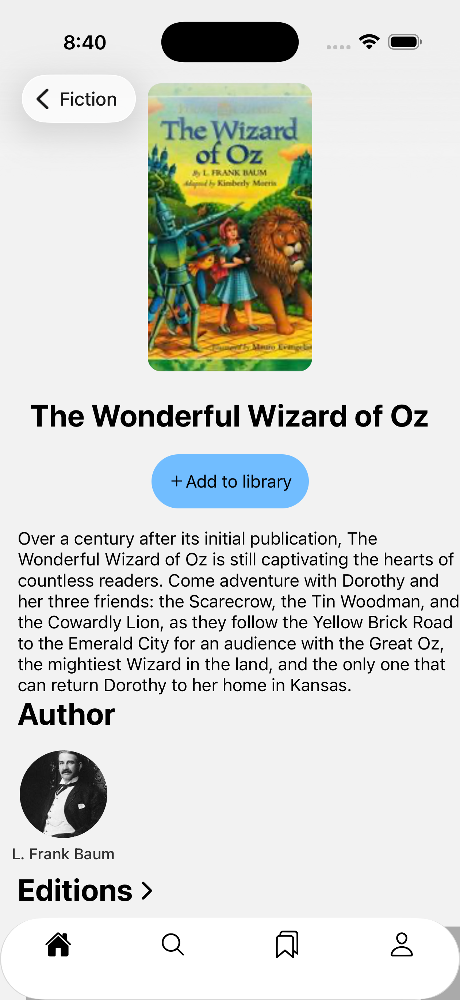
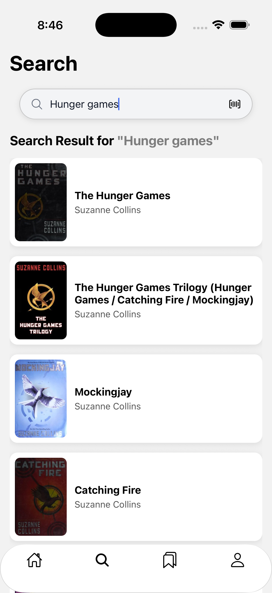
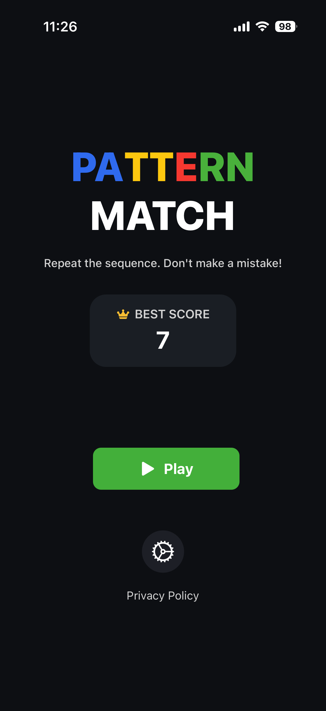
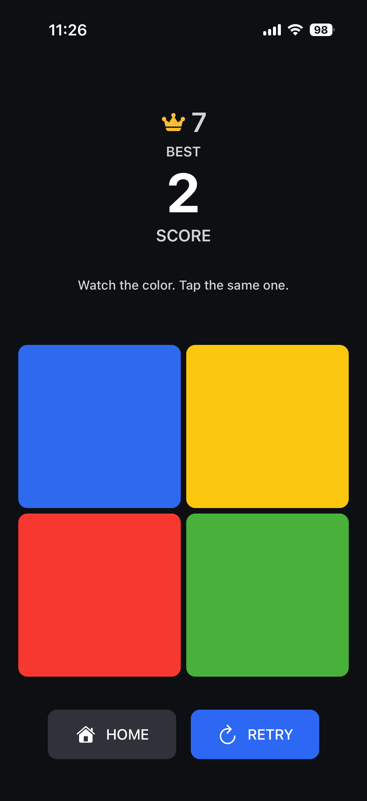
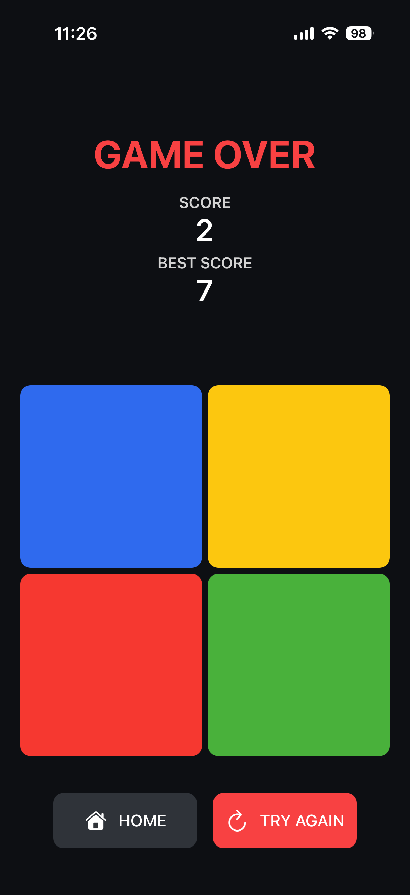
PatternMatch: Memory Game
Available:
PatternMatch: Memory Game is a simple and addictive memory puzzle where you test and improve your pattern recognition skills by repeating increasingly complex sequences.
React Native
TypeScript
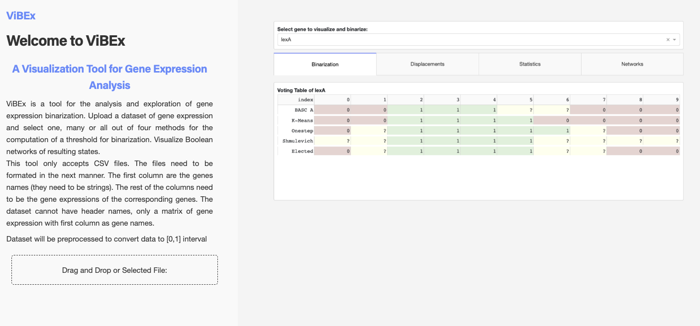
ViBEx
Available:
Master Project Web Application for the Analysis and Visualization of Boolean Networks of Gene Expressions.
Python
C
Dash
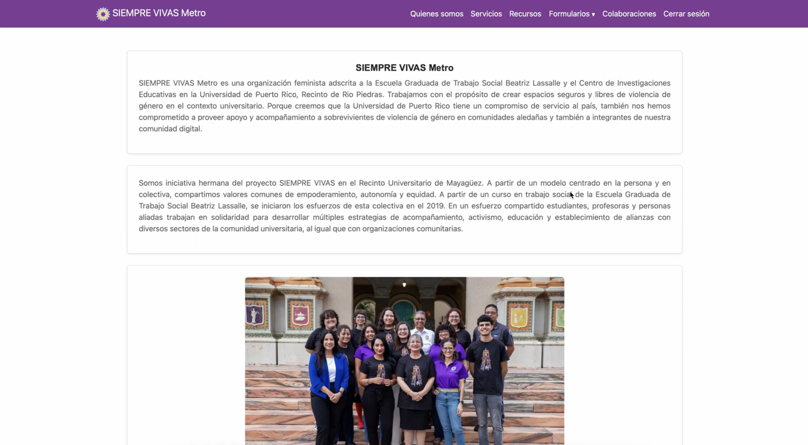
Siempre Vivas
A modern interactive website for Siempre Vivas Metro. Developed in collaboration with other collegues.
HTML
Python
CSS
MongoDB
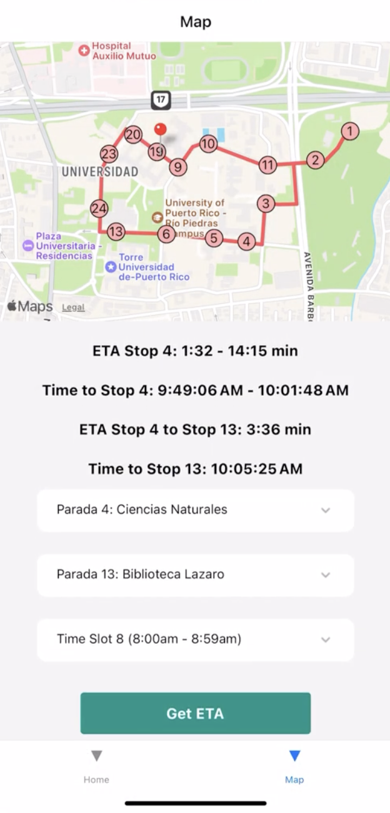
Trolley ETA at UPRRP
A mobile application for bus tracking in UPRRP campus. Developed in collaboration with other collegues.
React Native
Python
JavaScript
SQL
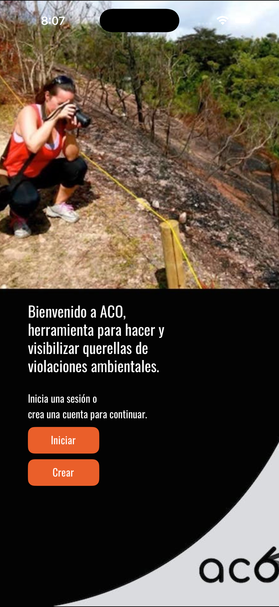
ACO
A mobile application for El Puente non-profit organization for reporting climate law violations in Puerto Rico. Developed in collaboration with other collegues.
React Native
JavaScript
Python
PostgreSQL
HTML
CSS